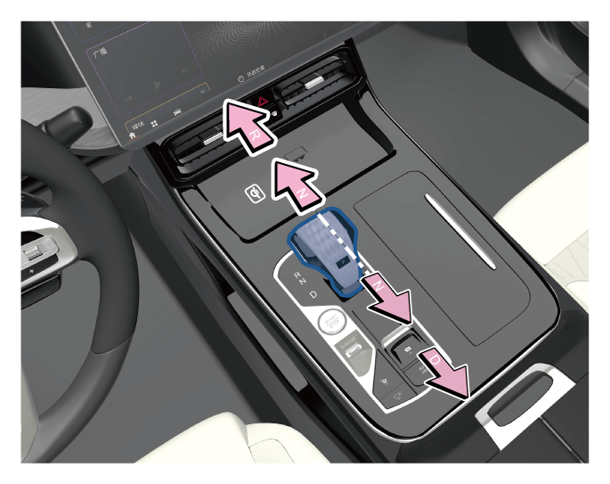
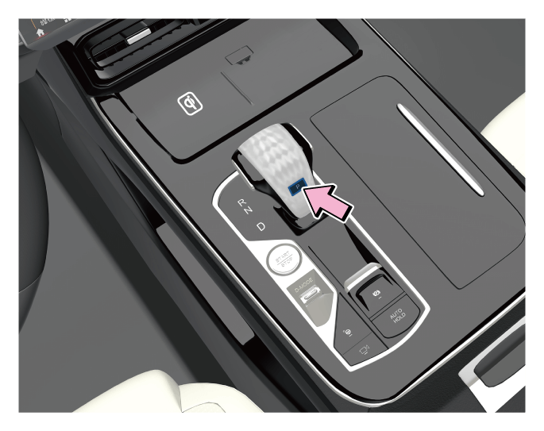

换挡杆挡位有“P、R、N、D”，P挡及驾驶模式通过按键实现。整车电源在“ON”挡位时，切换挡位后，换挡面板上相应的挡位灯会点亮，组合仪表显示相应的挡位。
5.1.4 挡位说明

警告+
车辆完全静止时，才能切换到“R”或“P”挡位，否则会损坏变速器。
P：驻车挡

–车速完全静止后，按下“P”挡按键，挡位直接切换至“P”挡位。
–整车电源从“ON”或“ACC”切换至“OFF”挡，挡位自动进入“P”挡。
–踩下制动踏板且将换挡杆向前或向后推，将换挡杆挂出“P”挡位。
提示+
当换挡系统故障而挡位无法切换出“P”挡时，请联系广汽传祺特约店进行检修。
R：倒车挡
– 车辆完全静止时，踩下制动踏板，将换挡杆挂入“R”挡位，倒车挡提示音响一声。
– 松开制动踏板，缓慢踩下油门踏板，车辆便向后行驶。
N：空挡
– 当挡位在“P”挡时，踩下制动踏板，轻轻向前推动换挡杆一格可进入“N”挡。
– 可直接将换挡杆从“R”或“D”挡位挂入“N”挡位。
–将换挡杆从“N”挡位挂出时，需踩下制动踏板。
警告+
车辆行驶过程中，切勿挂入“N”挡滑行，否则极易引发意外事故。
D：前进挡
– 车辆前进时挂入“D”挡位，此时系统会根据发动机负载和车速自动升挡或降挡。
– 踩下制动踏板，将换挡杆向后拉动，可从“P”、“N”、“R”挡位挂入“D”挡。
驾驶模式
换挡系统有以下模式，可通过驾驶模式按键选择切换：
– ECO(节能)模式：此模式下动力稍有迟滞，油耗比较经济。
– COMFORT(舒适)模式：此模式下动力响应、油耗比较均衡。
– SPORT(运动)模式：此模式下动力响应迅速，油耗较高。
– OFFROAD SNOW(雪地)模式*：此模式适合在雪地路面行驶。(4WD)
– OFFROAD SAND(沙地)模式*：此模式适合在沙地路面行驶。(4WD)
– OFFROAD MUD(泥地)模式*：此模式适合在泥地路面行驶。(4WD)
雪地模式*、沙地模式*和泥地模式*，在仪表界面以黄色字体显示，同时仪表上提醒驾驶员“当前模式禁止在铺装路面上驾驶”；节能模式、舒适模式、运动模式，在仪表界面以绿色字体显示。
注意
+
在某些情况下驾驶模式可能会自动跳变，例如节能模式下，当车辆在爬陡坡或者动力不足时，车辆会自动跳转至舒适模式。
驾驶模式选择

1.将整车电源置于“ON”挡位，通过上/下拨动驾驶模式按键，可以在“节能模式→舒适模式→运动模式→雪地模式*→沙地模式*→泥地模式*→节能模式......”之间循环切换目标驾驶模式。

2.通过音响系统界面，点击底部工具栏驾控面板键 ，查看当前驾驶模式或选择相应驾驶模式。
，查看当前驾驶模式或选择相应驾驶模式。
提示+
点击音响系统界面返回键或停留5s无操作，隐藏模式弹窗。

通过拨动中控台的驾驶模式（D-MODE）按键，音响系统弹出“驾驶模式”界面，点击“当前模式设定”设置当前驾驶模式参数。
提示+
若要记忆当前驾驶模式，需通过音响系统“设置→底盘动力→记忆当前驾驶模式”设置开启，下次启动车辆默认当前驾驶模式。
方向盘换挡拨片*

车辆正常行驶时，驾驶员可通过拨动方向盘上换挡拨片完成升挡或降挡操作（高配及以上车型）：
① 降挡拨片：降挡。
② 升挡拨片：升挡。
— 页面到底了 —